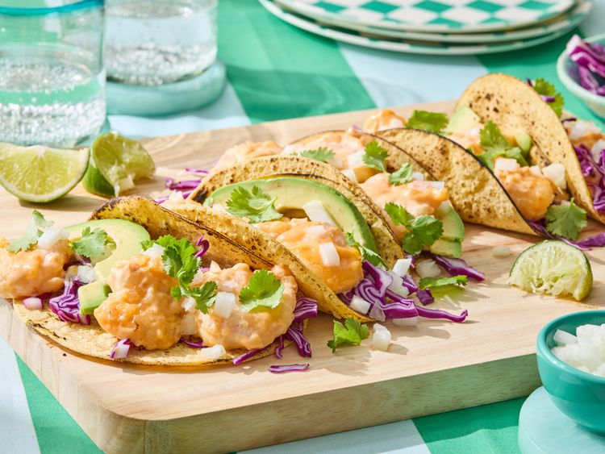

Bang Bang Shrimp Tacos
These bang bang shrimp tacos take bang bang flavor to the next level. Fried shrimp is tossed in spicy mayo, sweet chili-Sriracha sauce, and nestled into tacos with crunchy red cabbage, onion, and avocado.
Ingredients
- 1 pound fresh or frozen jumbo shrimp (21 to 25 per pound), peeled and deveined, thawed if frozen
- 1/2 cup buttermilk
- 2 cloves garlic, minced
- 1/2 teaspoon salt
- 1/2 teaspoon freshly ground black pepper
- 1/2 teaspoon onion powder
- 1/2 cup mayonnaise
- 3 tablespoons sweet chili sauce
- 1 tablespoon Sriracha sauce
- 1/4 head red cabbage, finely shredded
- 1/2 cup loosely packed fresh cilantro leaves
- 1 avocado - peeled, pitted, and sliced
- 1/4 sweet white onion, finely chopped
- 8 (6 inch) corn tortillas, or more as needed
- 1/4 cup vegetable oil, or more as needed
- 1/2 cup cornstarch
- lime wedges
Directions
- Gather all ingredients.
- Place shrimp in a bowl. Add buttermilk, garlic, salt, pepper, and onion powder; toss to coat. Let stand at room temperature while preparing remaining ingredients, about 30 minutes.
- For bang bang sauce, whisk mayonnaise, sweet chili sauce, and Sriracha together in a large bowl.
- Prepare cabbage, cilantro, avocado, and onion before beginning to cook. Place chopped onion in a fine mesh sieve. Rinse under cold running water; drain (this makes the flavor less sharp). Blot dry with paper towels; set aside.
- Heat corn tortillas, 1 at a time, on a dry skillet or griddle or directly on the grates of a gas burner over medium heat, 20 to 30 seconds per side. Stack tortillas as they are done and place between a folded sheet of foil to steam and keep warm. For flour tortillas, wrap in a damp paper towel and heat in the microwave 30 seconds.
- Heat oil in a large skillet over medium heat. Drain shrimp, and discard marinade. Dredge shrimp, in 2 batches, in cornstarch to coat, shaking off excess.
- Fry shrimp, in 2 batches, until opaque, 3 to 4 minutes, turning once, adding additional oil as needed.
- Place cooked shrimp in the bowl with bang bang sauce; toss to coat.
- Divide cabbage between warm tortillas. Top with shrimp, cilantro, avocado, and white onion. Spoon any extra Bang Bang sauce over the top. Serve with lime wedges.